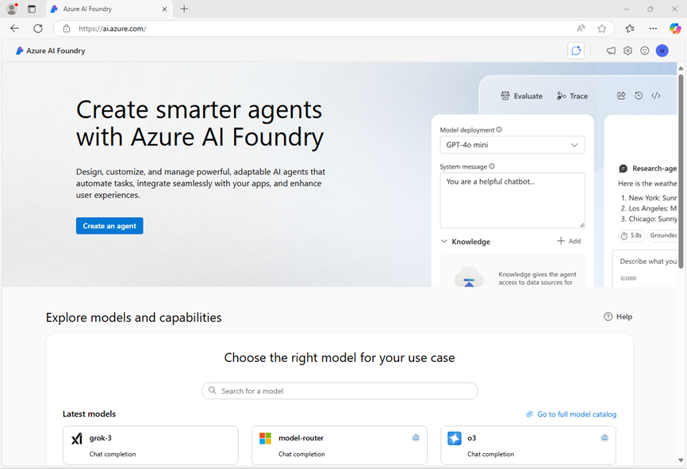

Microsoft has implemented increased security requirements on Microsoft accounts to require Multifactor Authentication (MFA). To prevent the need for you to utilize an Authenticator application, Skillable has implemented an update to our Cloud Slice solution in this lab and it now uses a Temporary Access Pass (TAP) token.
This TAP token is a replacement to the password and prevents the need to authenticate via MFA. The password has been replaced with the provided TAP token in this lab's instructions and both the password and TAP token can be found in your Resources tab at any time.
Important information
Read this before you start
In this hosted lab environment, there are some restrictions on the resource names, credentials, and other values you can use. In this exercise, you must use the following values:
Windows credentials:
Use these credentials to sign into Windows:
- User name: Admin
- Password: Pa55w.rd
Azure credentials
Use these credentials to sign into Azure:
- Email address: User1-57047957@LODSPRODMSLEARNMCA.onmicrosoft.com
- Temporary Access Pass (TAP): GK3m4-@L
Azure resources
Use these names when creating resources in Azure
- Resource group: ResourceGroup1
- Azure AI Foundry Project: project57047957
- Azure AI Project Hub: hub57047957
For all other resources, use the default name.
Tip: As you follow the instructions in this pane, whenever you see a icon, you can use it to copy text from the instruction pane into the virtual machine interface (other than to a cloud shell command line). This is particularly useful to copy code; but bear in mind you may need to modify the pasted code to fix indent levels or formatting before running it!
Now, when you're ready, go to the next page to start the exercise.
If you have to copy multiple lines within a code block into an application or cloud shell prompt, consider using Notepad as an intermediate step by doing the following:
- Open Notepad.
- Select the symbol beside the code block to copy the code block into Notepad.
- Select the lines of code you copied into Notepad and paste them into the application or cloud shell prompt.
Create a generative AI chat app
In this exercise, you use the Microsoft Foundry Python SDK to create a simple chat app that connects to a project and chats with a language model.
Note: This exercise is based on pre-release SDK software, which may be subject to change. Where necessary, we've used specific versions of packages; which may not reflect the latest available versions. You may experience some unexpected behavior, warnings, or errors.
While this exercise is based on the Foundry Python SDK, you can develop AI chat applications using multiple language-specific SDKs; including:
This exercise takes approximately 40 minutes.
Deploy a model in a Foundry project
Let's start by deploying a model in a Foundry project.
In a web browser, open the Foundry portal at
https://ai.azure.comand sign in using the username User1-57047957@LODSPRODMSLEARNMCA.onmicrosoft.com and the TAP GK3m4-@L. Close any tips or quick start panes that are opened the first time you sign in, and if necessary use the Foundry logo at the top left to navigate to the home page, which looks similar to the following image (close the Help pane if it's open):
In the home page, in the Explore models and capabilities section, search for the
gpt-4omodel; which we'll use in our project.In the search results, select the gpt-4o model to see its details, and then at the top of the page for the model, select Use this model.
When prompted to create a project, enter Project57047957
Select Customize and specify the following settings for your project:
- Foundry resource: Project57047957-resource
- Subscription: Your Azure subscription
- Resource group: ResourceGroup1
- Region: eastus2
* Some Azure AI resources are constrained by regional model quotas. In the event of a quota limit being exceeded later in the exercise, there's a possibility you may need to create another resource in a different region.
Select Create and wait for your project, including the gpt-4o model deployment you selected, to be created.
IMPORTANT: Depending on your available quota for gpt-4o models you might receive a additional prompt to deploy the model to a resource in a different region. If this happens, do so, using the default settings. Later in the exercise you will not be able to use the default project endpoint - you must use the model-specific target URI.
When your project is created, the chat playground will be opened automatically so you can test your model (if not, in the task pane on the left, select Playgrounds and then open the Chat playground).
In the Setup pane, note the name of your model deployment; which should be gpt-4o. You can confirm this by viewing the deployment in the Models and endpoints page (just open that page in the navigation pane on the left).
Create a client application to chat with the model
Now that you have deployed a model, you can use the Foundry and Azure OpenAI SDKs to develop an application that chats with it.
Prepare the application configuration
In the Foundry portal, view the Overview page for your project.
In the Endpoints and keys area, ensure that the Foundry library is selected and view the Foundry project endpoint. You'll use this endpoint to connect to your project and model in a client application.
Note: You can also use the Azure OpenAI endpoint!
Open a new browser tab (keeping the Foundry portal open in the existing tab). Then in the new tab, browse to the Azure portal at
https://portal.azure.com; signing in with the username User1-57047957@LODSPRODMSLEARNMCA.onmicrosoft.com and the TAP GK3m4-@L if prompted.Close any welcome notifications to see the Azure portal home page.
Use the [>_] button to the right of the search bar at the top of the page to create a new Cloud Shell in the Azure portal, selecting a PowerShell environment with no storage in your subscription.
The cloud shell provides a command-line interface in a pane at the bottom of the Azure portal. You can resize or maximize this pane to make it easier to work in.
Note: If you have previously created a cloud shell that uses a Bash environment, switch it to PowerShell.
In the cloud shell toolbar, in the Settings menu, select Go to Classic version (this is required to use the code editor).
Ensure you've switched to the classic version of the cloud shell before continuing.
In the cloud shell pane, enter the following commands to clone the GitHub repo containing the code files for this exercise (type the command, or copy it to the clipboard and then right-click in the command line and paste as plain text):
TypeCopyrm -r mslearn-ai-foundry -f git clone https://github.com/microsoftlearning/mslearn-ai-studio mslearn-ai-foundryTip: As you enter commands into the cloudshell, the output may take up a large amount of the screen buffer. You can clear the screen by entering the
clscommand to make it easier to focus on each task.After the repo has been cloned, navigate to the folder containing the chat application code files and view them:
TypeCopycd mslearn-ai-foundry/labfiles/chat-app/python ls -a -lThe folder contains a code file as well as a configuration file for application settings and a file defining the project runtime and package requrirements.
In the cloud shell command-line pane, enter the following command to install the libraries you'll use:
TypeCopypython -m venv labenv ./labenv/bin/Activate.ps1 pip install -r requirements.txt azure-identity azure-ai-projects openaiEnter the following command to edit the configuration file that has been provided:
TypeCopycode .envThe file is opened in a code editor.
IMPORTANT: If you deployed your gpt-4o model in the default region for your project, you can use the Foundry project or Azure OpenAI endpoint on the Overview page for your project to connect to your model. If you had insufficient quota and deployed the model to another region, on the Models + Endpoints page, select your model and use the Target URI for your model.
In the code file, replace the your_project_endpoint placeholder with the appropriate endpoint for your model, and the your_model_deployment placeholder with the name assigned to your gpt-4o model deployment.
After you've replaced the placeholders, within the code editor, use the CTRL+S command or Right-click > Save to save your changes and then use the CTRL+Q command or Right-click > Quit to close the code editor while keeping the cloud shell command line open.
Write code to connect to your project and chat with your model
Tip: As you add code, be sure to maintain the correct indentation.
Enter the following command to edit the code file that has been provided:
TypeCopycode chat-app.pyIn the code file, note the existing statements that have been added at the top of the file to import the necessary SDK namespaces. Then, find the comment Add references, and add the following code to reference the namespaces in the libraries you installed previously:
pythonTypeCopy# Add references from azure.identity import DefaultAzureCredential from azure.ai.projects import AIProjectClient from openai import AzureOpenAIIn the main function, under the comment Get configuration settings, note that the code loads the project connection string and model deployment name values you defined in the configuration file.
Find the comment Initialize the project client, and add the following code to connect to your Foundry project:
Tip: Be careful to maintain the correct indentation level for your code.
pythonTypeCopy# Initialize the project client project_client = AIProjectClient( credential=DefaultAzureCredential( exclude_environment_credential=True, exclude_managed_identity_credential=True ), endpoint=project_endpoint, )Find the comment Get a chat client, and add the following code to create a client object for chatting with a model:
pythonTypeCopy# Get a chat client openai_client = project_client.get_openai_client(api_version="2024-10-21")Find the comment Initialize prompt with system message, and add the following code to initialize a collection of messages with a system prompt.
pythonTypeCopy# Initialize prompt with system message prompt = [ {"role": "system", "content": "You are a helpful AI assistant that answers questions."} ]Note that the code includes a loop to allow a user to input a prompt until they enter "quit". Then in the loop section, find the comment Get a chat completion and add the following code to add the user input to the prompt, retrieve the completion from your model, and add the completion to the prompt (so that you retain chat history for future iterations):
pythonTypeCopy# Get a chat completion prompt.append({"role": "user", "content": input_text}) response = openai_client.chat.completions.create( model=model_deployment, messages=prompt) completion = response.choices[0].message.content print(completion) prompt.append({"role": "assistant", "content": completion})Use the CTRL+S command to save your changes to the code file.
Sign into Azure and run the app
In the cloud shell command-line pane, enter the following command to sign into Azure.
TypeCopyaz loginYou must sign into Azure - even though the cloud shell session is already authenticated.
Note: In most scenarios, just using az login will be sufficient. However, if you have subscriptions in multiple tenants, you may need to specify the tenant by using the --tenant parameter. See Sign into Azure interactively using the Azure CLI for details.
When prompted, follow the instructions to open the sign-in page in a new tab and enter the authentication code provided and the username User1-57047957@LODSPRODMSLEARNMCA.onmicrosoft.com and the TAP GK3m4-@L. Then complete the sign in process in the command line, selecting the subscription containing your Foundry hub if prompted.
After you have signed in, enter the following command to run the application:
TypeCopypython chat-app.pyWhen prompted, enter a question, such as
What is the fastest animal on Earth?and review the response from your generative AI model.Try some follow-up questions, like
Where can I see one?orAre they endangered?. The conversation should continue, using the chat history as context for each iteration.When you're finished, enter
quitto exit the program.
Tip: If the app fails because the rate limit is exceeded. Wait a few seconds and try again. If there is insufficient quota available in your subscription, the model may not be able to respond.
Summary
In this exercise, you used the Foundry SDK to create a client application for a generative AI model that you deployed in a Foundry project.
Clean up
If you've finished exploring Foundry portal, you should delete the resources you have created in this exercise to avoid incurring unnecessary Azure costs.
- Open the Azure portal and view the contents of the resource group where you deployed the resources used in this exercise.
- On the toolbar, select Delete resource group.
- Enter the resource group name and confirm that you want to delete it.
End the lab
Please be sure to end the lab.
Azure Portal
| URL | https://portal.azure.com/#home |
| Subscription | dcfc55c1-7978-4b3c-bc3a-3eb78f92e52e |
| Username | User1-57047957@LODSPRODMSLEARNMCA.onmicrosoft.com |
| Password | rNqS8e!0D+Nn |
| TAP | GK3m4-@L |
Resource GroupResourceGroup1
Support Information
| ID | 57047957 |
| Host | SGP-HV32 |
| Datacenter | East US 2 |